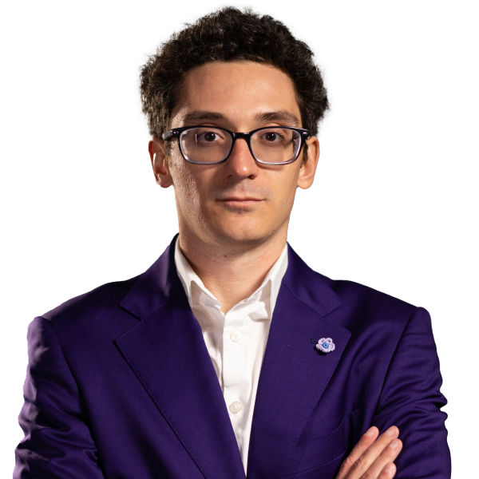

Fabiano Caruana
Fabiano Caruana nació el 30 de julio de 1992 en Miami, Estados Unidos, aunque gran parte de su infancia y formación ajedrecística se desarrolló en Europa. Desde muy pequeño mostró un talento excepcional para el ajedrez, comenzando a jugar a los cinco años después de integrarse a un programa escolar. Su habilidad progresó rápidamente y pronto empezó a competir en torneos de alto nivel contra jugadores experimentados. Durante varios años representó a Italia en competencias internacionales, convirtiéndose en uno de los mejores jugadores europeos de su generación. A los 14 años obtuvo el título de gran maestro internacional, siendo en ese momento uno de los más jóvenes del mundo en alcanzar esa distinción. Caruana se hizo reconocido por su estilo de juego extremadamente preciso, profundo y analítico, destacando especialmente en aperturas complejas y posiciones estratégicas. Su disciplina de estudio, preparación teórica y capacidad de cálculo lo llevaron a competir constantemente entre los mejores ajedrecistas del planeta.
La carrera de Fabiano Caruana alcanzó gran reconocimiento internacional en 2014, cuando realizó una actuación histórica en el torneo de Sinquefield Cup, donde logró una impresionante racha de victorias consecutivas contra algunos de los mejores jugadores del mundo. Gracias a ese desempeño, muchos expertos comenzaron a considerarlo el principal rival de Magnus Carlsen en el ajedrez moderno. En 2018 ganó el Torneo de Candidatos y obtuvo el derecho de disputar el Campeonato Mundial contra Carlsen. El enfrentamiento fue uno de los más equilibrados de los últimos años, ya que las partidas clásicas terminaron empatadas, aunque finalmente Carlsen se impuso en los desempates rápidos. Además de su éxito en ajedrez clásico, Caruana ha representado a Estados Unidos en importantes competencias internacionales como las Olimpiadas de Ajedrez, ayudando a su equipo a conseguir resultados históricos. Su capacidad para analizar posiciones complejas, mantener la concentración durante largas partidas y encontrar recursos tácticos precisos lo han convertido en uno de los jugadores más respetados de la élite mundial. A lo largo de su carrera ha permanecido constantemente entre los mejores del ranking internacional y es considerado un ejemplo de dedicación, disciplina y excelencia intelectual dentro del ajedrez profesional.